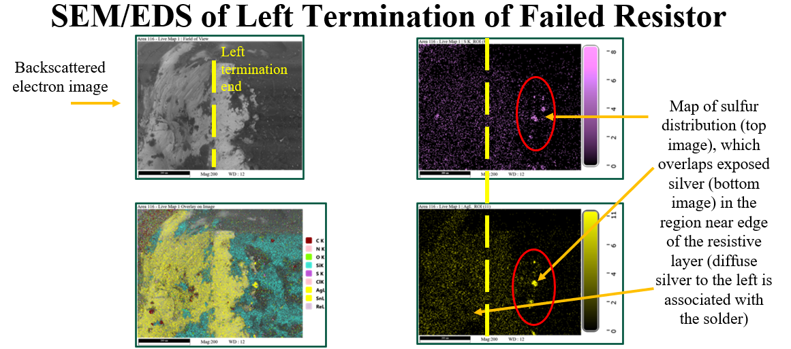

Objectives & Scope
- Validate sulfur‑related corrosion mechanisms at resistor terminations.
- Quantify impact of termination discontinuities on elevated resistance.
- Recommend construction/process changes for sulfur‑rich environments.
Specimens & Conditions
| Group | N | Env. | Notes |
|---|---|---|---|
| Field Returns | 18 | Industrial | High sulfur exposure suspected |
| Warehouse Stock | 12 | Controlled | Baseline comparison |
Equipment
- 4‑wire resistance measurement setup (ppm resolution).
- Optical microscope; polishing & cross‑section prep.
- FTIR for sulfur compound detection; EDS elemental mapping.
Procedure
- Confirm symptom via precision resistance vs. spec.
- Microscopy to document termination & solder joint integrity.
- FTIR scans for sulfur species; EDS maps on cross‑sections for correlation.
Results & Observations
- Corrosion at termination metallization consistent with sulfur pathways.
- Gaps/discontinuities at termination interface causing high resistance.
- Field returns show stronger sulfur signatures than warehouse stock.
Root Cause: Sulfur‑driven corrosion of termination metallization plus mechanical/assembly gaps at solder/termination interface.
Recommendations
- Specify anti‑sulfur resistor constructions for at‑risk environments.
- Consider conformal coating; tighten storage controls (sealed, desiccated).
- Supplier PPAP updates: corrosion screening, EDS sampling, FTIR limits.
Deliverables
- FA report with photographic evidence, FTIR spectra, EDS maps.
- CAPA with supplier engagement and process changes.
At a Glance
- Failure ModeTermination Corrosion
- ImpuritySulfur
- Electrical SymptomHigh Resistance

Fig. R1 — EDS sulfur mapping at termination interface.